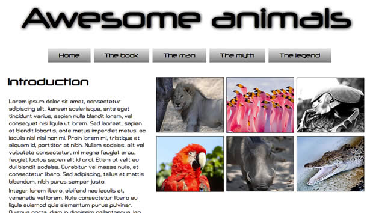
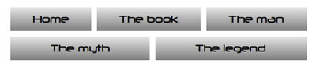
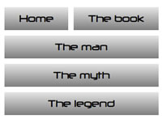
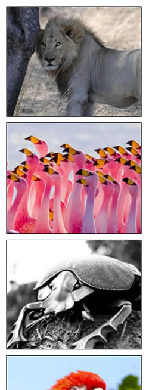

Advanced cross-browser flexbox
Introduction
The CSS Flexible box module level 3 — or Flexbox for short — brings with it a lot of power and some very exciting possibilities for web development, allowing us to put together complex site layouts easily and rapidly, and dispensing with some of the illogical hacks and kludges that we've traditionally used. I dealt with the basics of Flexbox in my article Flexbox: fast track to layout nirvana? In this article I will go a bit further, looking at a more advanced example, and using Modernizr to serve different styles to browsers with differing levels of flexbox support, providing the best level of cross browser support currently available.
Introducing the example
The example I have built for this article looks like Figure 1:

Figure 1: An image of the final layout example
This has multiple levels of flexboxes contained within it. You can view the example live if you wish, and read on to explore the code in more detail.
The overall layout
The basic layout of the site is like this:
<section>
<nav></nav>
<article></article>
<article></article>
</section>The <section> is set to display as a flexible box like so:
section {
display: -ms-flexbox;
-ms-box-orient: horizontal;
display: -webkit-flex;
display: -moz-flex;
display: -ms-flex;
display: flex;
-webkit-flex-flow: row wrap;
-moz-flex-flow: row wrap;
-ms-flex-flow: row wrap;
flex-flow: row wrap;
}Note: Different IE-specific properties are specified at the top of the rule because IE10 currently supports different flexbox syntax (from 2011) to the latest spec supported by Opera and Chrome. What makes it worse is that Firefox and other WebKit browsers (like Safari) support an even older version of the syntax (from 2009). And to top it off, Modernizr reports IE10 as supporting modern flexbox, even though it doesn't, therefore we need to deal with IE10 like this, rather than in a Modernizr rule. See below, in the Intelligent fallbacks for flexbox section for more details and clarification.
I am making the flow horizontal, but forcing the <nav> to sit on its own line using the following rule:
nav {
padding: 1rem;
-webkit-flex: 1 100%;
-moz-flex: 1 100%;
-ms-flex: 1 100%;
flex: 1 100%;
}Setting flex-basis to 100% makes it take up 100% of the width of its parent, forcing the other flexbox children to wrap onto a new line. The <article>s are set with flex-grow values as follows:
article:nth-of-type(1) {
-webkit-flex: 2;
-moz-flex: 2;
-ms-flex: 2;
flex: 2;
}
article:nth-of-type(2) {
-webkit-flex: 3;
-moz-flex: 3;
-ms-flex: 3;
flex: 3;
}They will take up that proportion of the space on the line they are sat on — the first <article> spanning 40%, or 2/5ths of the width, and the second <article> (the image container) spanning 60%, or 3/5ths of the width. This is worth remembering — the proportion values constitute a proportion of the space only on the line the item is sitting on, not all lines the children are sat on.
Note: The flex-basis values, when specified, are applied to the flexbox child elements first; after that, the space left over in the parent is divided up between the children according to the flex-grow proportion values. When a flex-grow value is not set explicitly, like in the nav ruleset above, it defaults to 1. For more information on how these work, read the "Making your elements flex" section of my Flexbox — fast track to layout nirvana? article.
Child flexboxes
When you set an element to be laid out as a flexible box, it will only flex its immediate children, and not further descendants. But there is nothing to stop you making those descendants flexible boxes as well, enabling some really complex layouts! Here, I have set the <nav> to be a flexbox as well, so I can center it effectively without having to worry about how wide it is:
nav {
display: -ms-flexbox;
-ms-box-orient: horizontal;
-ms-box-pack: center;
display: -webkit-flex;
display: -moz-flex;
display: -ms-flex;
display: flex;
-webkit-justify-content: center;
-moz-justify-content: center;
-ms-justify-content: center;
justify-content: center;
}Then I've made <ul> a flexible box as well and wrapped and centered its children, the <li>s:
nav ul {
text-align: center;
display: -ms-flexbox;
-ms-box-orient: horizontal;
-ms-box-pack: center;
display: -webkit-flex;
display: -moz-flex;
display: -ms-flex;
display: flex;
-webkit-flex-flow: row wrap;
-moz-flex-flow: row wrap;
-ms-flex-flow: row wrap;
flex-flow: row wrap;
-webkit-justify-content: center;
-moz-justify-content: center;
-ms-justify-content: center;
justify-content: center;
width: 80%;
}
nav a {
width: 100%;
}I have also added a few other properties to sort out the look of those navigation items. I want the <ul> to not quite stretch all the way across the screen and have all text centered, so I've set width: 80% and text-align: center; I'm also making sure the anchors span the whole width of the <li>s, with width: 100%.
Next comes the magic moment. At this point the list items are looking a bit overlapping and odd, and they look stupid when they start to wrap. How's about a nice responsive menu that looks really cool, with no media queries required? All that's required is the following rule:
nav ul li {
margin: 0 1.5rem;
-webkit-flex: auto;
-moz-flex: auto;
-ms-flex: auto;
flex: auto;
min-width: 5rem;
}Here I am giving the list items some breathing room with margin, giving them a min-width, and setting flex to auto. This is a special value of flex that allows flex children to respect min-width type values and remain a constant size when no excess space is available, but expand to fill any excess space when it does because available. See what happens when you expand and contract the page (illustrated in Figure 2)?

Figure 2: Magical expanding and contracting Flexy menu!
I have also flexed the 2nd <article>, and laid out the paragraphs inside like so (each contains an image):
article:nth-of-type(2) {
display: -ms-flexbox;
-ms-box-orient: horizontal;
-ms-box-pack: center;
-ms-box-align: center;
display: -webkit-flex;
display: -moz-flex;
display: -ms-flex;
display: inline-flex;
-webkit-flex-flow: row wrap;
-moz-flex-flow: row wrap;
-ms-flex-flow: row wrap;
flex-flow: row wrap;
-webkit-justify-content: center;
-moz-justify-content: center;
-ms-justify-content: center;
justify-content: center;
-webkit-align-items: center;
-moz-align-items: center;
-ms-align-items: center;
align-items: center;
-webkit-align-content: flex-start;
-moz-align-content: flex-start;
-ms-align-content: flex-start;
align-content: flex-start;
}
article p {
margin: 0.5rem;
-webkit-flex: 1 20rem;
-moz-flex: 1 20rem;
-ms-flex: 1 20rem;
flex: 1 20rem;
}
article p img {
display: block;
width: 100%;
border: 1px solid black;
}Here I am setting them to have a fixed flex-basis value, so they will change the number per line as the width increases and decreases (See Figure 3 — again, no media queries required), and have made both the items and the item content sit in the middle, horizontally and vertically.

Figure 3: A nice responsive image box, without media queries.
Intelligent fallbacks for flexbox
Support for flexbox is getting there (WebKit browsers, Presto-based Opera, Firefox support limited, coming in others soon!) but it will be a little while before support is really in the mainstream. This means that for now, we'll need to employ some intelligent alternatives if we want to employ flexbox in production code. Some browsers (old WebKits, and Firefox) support an older version of the Flexbox syntax from 2009. IE10 supports a weird hybrid of old and new, from 2011. As luck would have it the Modernizr feature detection library has a feature detect for modern flexbox syntax and legacy flexbox syntax, with the flexbox, and flexbox-legacy flags. But there's a further problem — Modernizr's tests report IE10 as supporting modern flexbox, and not flexbox legacy. It in fact doesn't support either — it supports an in between syntax! This is why we have been putting the IE10-specific properties throughout our code in the main CSS rules, rather than dealing with them in the Modernizr code blocks you'll see below.
Note: There has been discussion about what to do with the Modernizr flexbox IE10 detection issue, and it is still ongoing as of April 2013.
The following table provides a summary of modern flexbox syntax, and its equivalent in the 2009, and 2011 hybrid syntax:
| Final syntax | 2009 syntax | 2011 hybrid syntax |
|---|---|---|
| display: flex | display: box | display: flexbox |
| flex-direction: row | box-orient: horizontal | box-orient: horizontal |
| justify-content: flex-start | box-pack: start | box-pack: start |
| align-items: flex-start | box-align: start | box-align: start |
| flex: 1 | box-flex: 1 | flex: 1 |
Note: There is a box-lines property in the 2009 spec, which looks like an equivalent of flex-wrap, but unfortunately this doesn't seem to be supported by any of the legacy syntax-supporting browsers. My example therefore wouldn't work, so I had to simplify it for older browsers.
So I have got the following fallback styles provided in my example for browsers that don't support flexbox modern, but do support flexbox legacy:
/* legacy flexbox fallback */
.no-flexbox section {
display: -webkit-box;
display: -moz-box;
-webkit-box-orient: horizontal;
-moz-box-orient: horizontal;
}
.no-flexbox nav {
padding: 1rem;
width: 20%;
}
.no-flexbox article {
-webkit-box-flex: 1;
-moz-box-flex: 1;
}
.no-flexbox article p {
float: left;
}
.no-flexbox article img {
display: block;
width: 200px;
}Then we've got the following in place, for browsers that don't even support legacy flexbox:
.no-flexbox-legacy nav, .no-flexbox-legacy article {
float: left;
}
.no-flexbox-legacy nav {
width: 20%;
}
.no-flexbox-legacy article {
width: 36%;
}
.no-flexbox article img {
float: left;
}Note: A good way to generate cross browser Flexbox code, and learn about the syntax different browsers use, is to use the Flexy Boxes tool.
Adding in simple media queries for narrow and wide screen layouts
In the end, I did decide to put in a couple of media queries, just to fix the layout at narrow screen widths. But please take note of how small the code inside the media queries is: flexbox creates layouts that are innately very flexible, at varying screen widths.
First of all, a brief fix for the legacy flexbox layout:
@media all and (max-width: 600px) {
h1 {
font-size: 5rem;
}
.no-flexbox section {
-webkit-box-orient: vertical;
-moz-box-orient: vertical;
}
.no-flexbox nav {
width: 100%;
margin-left: -3rem;
}
.no-flexbox nav a, .no-flexbox nav ul, .no-flexbox nav li {
width: 100%;
}
}Next, a fix for modern flexbox and no flex at all browsers, at small screen widths.
@media all and (max-width: 480px) {
article:nth-of-type(1) {
-webkit-flex: 1 100%;
-moz-flex: 1 100%;
-ms-flex: 1 100%;
flex: 1 100%;
}
body {
min-width: 320px;
}
nav ul {
width: 100%;
}
.no-flexbox-legacy nav, .no-flexbox-legacy article {
float: none;
}
.no-flexbox-legacy nav, .no-flexbox-legacy article {
width: 100%;
}
}Last, a media query that just centers the content on wide screens.
@media all and (min-width: 1100px) {
section {
width: 1100px;
margin: 0 auto;
}
}Conclusion
There are limitations to using flexbox at the moment, and it will be much easier when flexbox is just supported across all modern browsers in the same way. For now, it is much more effective to just stick to simpler, single line uses of flexbox, as multi-line flexboxes can't really be done effectively in legacy-flex supporting browsers. As it standards, my example works ok, even though the legacy layout is not as good as the modern flexbox layout; one other interesting problem is that Firefox seems to refuse to center content that has been laid out as a flexbox using the margin: 0 auto trick (the centering works fine in Safari).
For simple flexbox uses however, you can get things working well a wide range of modern browsers: Chrome, Firefox, Safari, Opera Presto 12.1+, IE 10+, iOS and Android.
Chris Mills

Chris Mills is a web technologist, open standards evangelist and education agitator, currently working at Opera Software in the developer relations team. He spends most of his time writing articles about web standards for dev.opera.com and other publications (such as .net mag and A List Apart), giving talks at universities and industry conferences, and lobbying universities to improve their web education courses. He believes that education is the answer to everything, but in particular he is passionate about using education to improve the overall content quality, accessibility, usability and future-viability of the Web.
He is the creator of the Opera Web standards curriculum, contributor to the WaSP InterACT project, and coauthor of InterACT with web standards: A Holistic Approach to Web Design. In August 2011, he also accepted the position of co-chair of the newly-formed Web Education Community Group.
Outside work he is a heavy metal drummer, proud father of three and lover of good beer.
This article is licensed under a Creative Commons Attribution 3.0 Unported license.
Comments
-

Nice information, valuable and excellent design, as share good stuff with good ideas and concepts, lots of great information and inspiration, both of which I need, thanks to offer such a helpful information here.
-

I really enjoy simply reading all of your weblogs. Simply wanted to inform you that you have people like me who appreciate your work. Definitely a great post. Hats off to you! The information that you have provided is very helpful.
No new comments accepted.ahsanazam
Wednesday, December 18, 2013
Boardwalk Residences
ahsanazam
Wednesday, December 18, 2013
FFXIV Gil